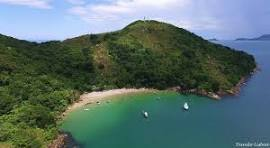
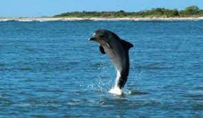
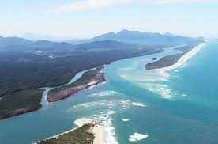
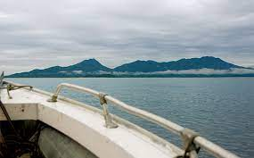

Ilha do Bom Abrigo
A ilha do Bom Abrigo faz parte do complexo Lagamar, região que se estende até a baía de Paranaguá, englobando as ilhas do Cardoso, do Mel e Superagüi, constituindo-se numa das mais importantes áreas do Brasil.
Baia dos Golfinhos
A Baía dos Golfinhos é um passeio imperdível na região de Cananeia. Os barcos, escunas e lanchas partem do cais e em poucos minutos chegam à Baía onde é possível avistar vários golfinhos que são tão dóceis que até se aproximam das embarcações.
Enseada da Baleia
A Enseada da Baleia é uma comunidade caiçara situada na Ilha do Cardoso, em Cananéia/SP, no ano de 1845 estabeleceu-se a primeira família, onde o local apresentava grande potencial para produção de peixe seco.
Ilha do Cardoso
A Ilha do Cardoso localiza-se no litoral sul de São Paulo, no município de Cananéia, a 272 Km da cidade de São Paulo. Tem como ponto de referência o extremo sul da Ilha Comprida e a Ilha de Cananéia, das quais se separa pela Bahia de Trapandé. Abrange uma área de 13,6 mil hectares, onde são encontrados vários tipos de vegetação da Mata Atlântica, que proporcionam variedade extraordinária de ambientes e alta diversidade biológica